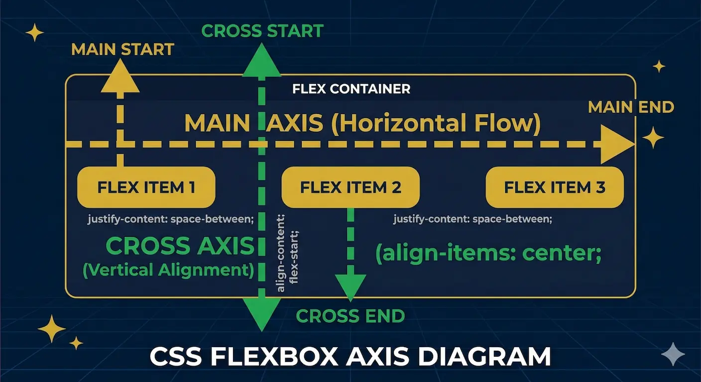

← Voltar ao Portal da Disciplina
Conheça meu trabalho como perito
← Voltar ao Portal da Disciplina
Conheça meu trabalho como perito
← Voltar ao Portal da Disciplina
Conheça meu trabalho como perito
← Voltar ao Portal da Disciplina
Conheça meu trabalho como peritoUsabilidade, desenvolvimento web, mobile e jogos
Data: 11 de Março de 2026
O CSS3 é "cego" sem seletores. Segundo Frain (2020), a separação entre estrutura e apresentação é o que garante a acessibilidade.
Se o HTML não é semântico, o CSS perde o poder de comunicar a hierarquia da informação aos motores de busca (SEO).
DOM: O Esqueleto Lógico
"O layout deve ser fluido. O HTML é o esqueleto estático; o CSS é a pele adaptável."
— Ethan Marcotte (2011)
<nav>).
display: flex).
A retenção do usuário começa na velocidade. Um CSS externo e otimizado permite o cache do navegador.
"Imagens flexíveis e grades fluidas são a base do design responsivo que o Google prioriza."
— Marcotte (2011)
"A consistência visual reduz a carga cognitiva. O usuário que entende a interface rapidamente, permanece e converte."
— Jakob Nielsen (2012)
Design previsível e hierarquia clara via Flexbox.
Destaque em CTAs (Call to Action) e contraste de cores.
Segundo Frain (2020), todo elemento é uma caixa. Dominar o Box Model é evitar que o layout "quebre" ao somar padding e bordas.
box-sizing: border-box;
O "pulo do gato": Garante que o tamanho da caixa inclua o padding e a borda.
Hierarquia de Espaçamento
O uso de Custom Properties (Variáveis) permite manter a identidade visual em larga escala. Conforme Nielsen (2012), a consistência reduz a carga cognitiva.
:root {
--primary-color: #d4af37;
--main-padding: 20px;
}
Facilita alterações globais e testes A/B para Conversão.
Garante que o usuário reconheça a marca em todas as seções.
Conforme afirma Coyier (2021), o Flexbox foi projetado para layouts unidimensionais. Ele trabalha ou em linha (row) ou em coluna (column).
Eixo Principal (Main Axis): Onde o conteúdo flui.
Eixo Transversal (Cross Axis): Onde o conteúdo é alinhado.

Controle Total de Alinhamento
Use justify-content: center para garantir que seus botões de chamada para ação estejam sempre em destaque.
O uso de flex-grow permite que a interface se adapte sem "quebrar" em diferentes resoluções.
display: flex; gap: 10px; align-items: center;
Diferente do Flexbox, o Grid Layout trabalha simultaneamente com linhas e colunas.
"O controle bidimensional permite layouts complexos que antes exigiam 'hacks' técnicos, garantindo uma estrutura sólida para IHC."
— Frain (2020)
Grid: O Mapa da Interface
No Mobile First, o Grid permite empilhar o conteúdo essencial primeiro para conversão e, via Media Queries, expandir para layouts complexos em telas maiores.
Fluxo vertical. Foco na tarefa única e velocidade de carregamento.
Aproveitamento do espaço horizontal com grid-template-columns.
Retorno Impreterível às:
20:50
"O descanso faz parte do processo criativo. Aproveite para trocar ideias
sobre o Tripé Estratégico com seus colegas."
PRESENÇA
Crie uma pasta chamada projeto-perfil. Dentro dela, crie os ficheiros:
Lembre-se da aula anterior: a semântica manda. Use <main>, <section> e <footer>.
Não adivinhe por que o layout quebrou. Use o F12 (DevTools) para validar o Box Model.
Validando a Geometria via Código
Crie a pasta aula-pratica-11-03. Use o VS Code para criar os arquivos index.html e style.css.
Aplique a separação de camadas: Estrutura (HTML5) vs Estilo (CSS3) conforme o material disponibilizado.
Analise como o Flexbox transforma uma lista semântica em um componente moderno e adaptável.
Escaneie para Responder
Responda às 5 questões baseadas no código do seu Cartão de Perfil.
⚠️ IMPORTANTE:
O gabarito comentado será apresentado exclusivamente na aula do dia 18/03.
Nos vemos na aula de 18/03: Frameworks Modernos.
Materiais da Aula:
Prof. Dr. Lincoln Sposito | Analista de Sistemas | USJT 2026
Sua avaliação ajuda a ajustar o tripé: SEO, Retenção e Conversão.